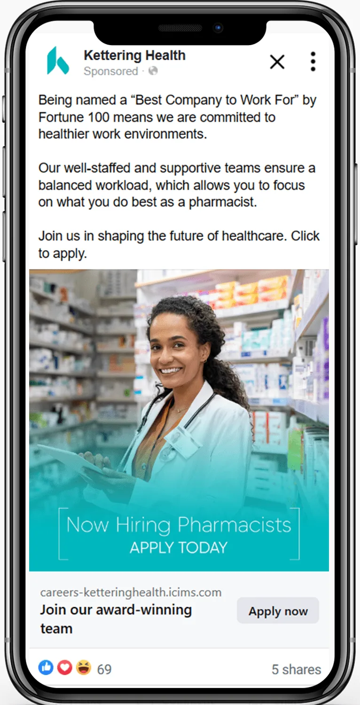
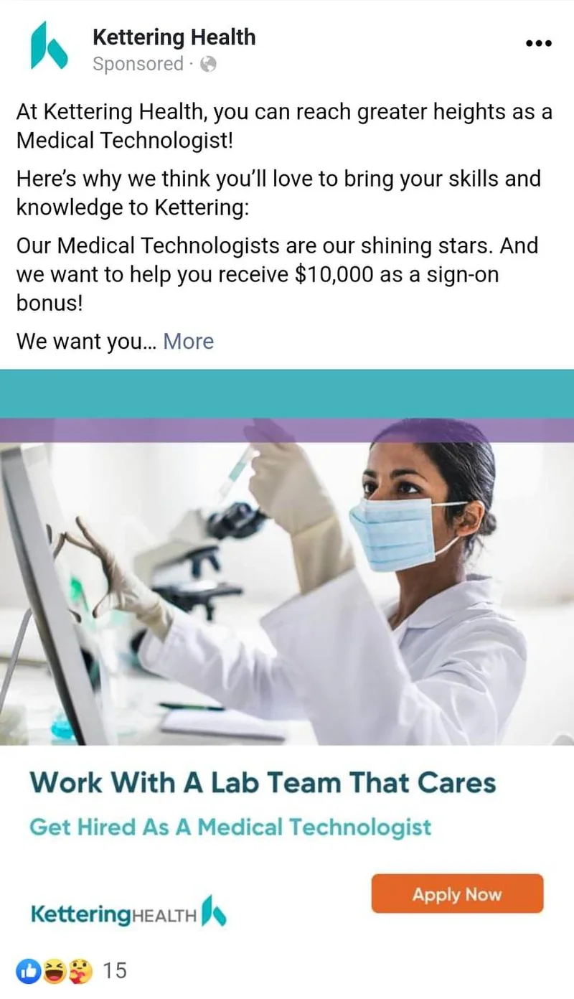
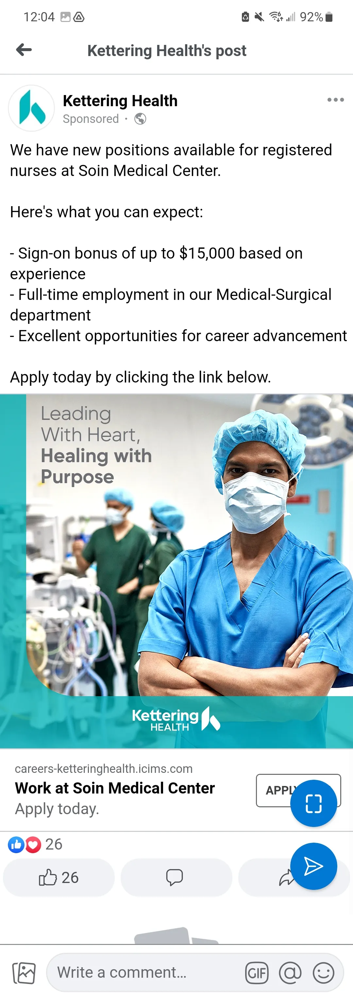
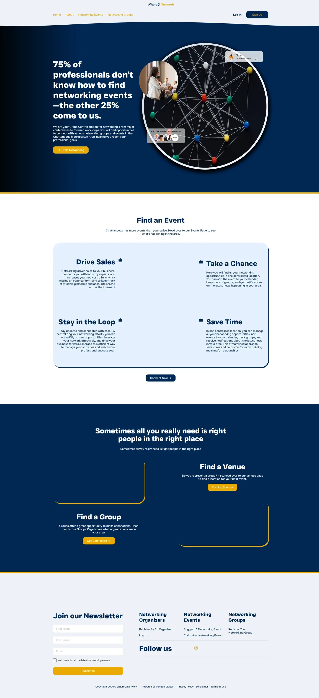
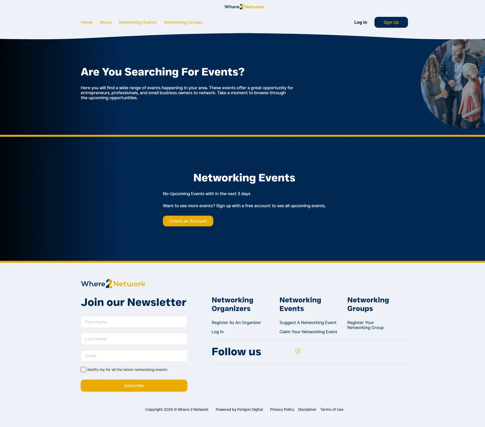
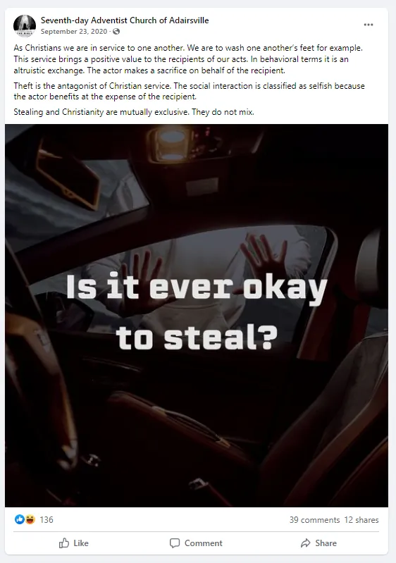
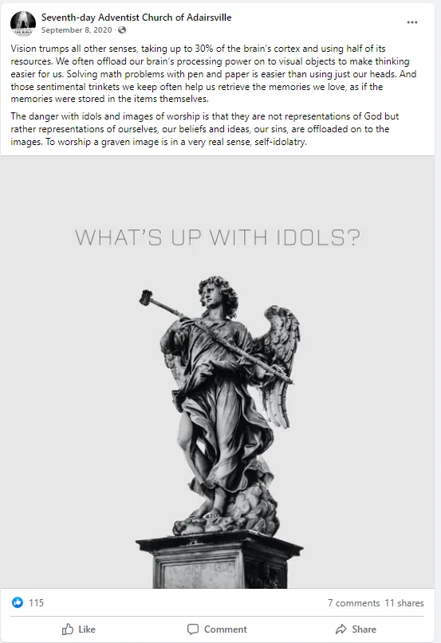
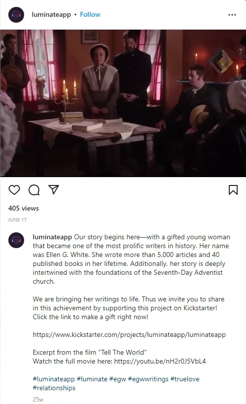

BRYAN RIVERA
Copywriter | Author | Digital Marketer
Copywriter for healthcare and business brands: recruitment landing pages, ads and emails that turn readers into applicants.
About Me
For the past several years, I have worked closely with multiple brands and businesses, spanning over ten different industries, to write their persuasive messaging. These brands include Kettering Health, one of the largest medical systems in Ohio.
Regardless of the channel—be it email, social media, or landing pages—my strengths include truly understanding the target audience and finding the right phrases that change their attitudes and behaviors.
Follow me on LinkedIn to connect.
“Advertising is not about being clever; it’s about finding a truth that connects the product to the user.”
—Wayne Best, creative director, Kirshenbaum Bond
Overview
I have worked with the following organizations across healthcare, education, and ministry:
Business & Media
Ministry & Nonprofit
Also worked with
Kettering Health
Recruitment marketing for an IBM Watson Health™ 100 Top institution with 14 medical centers and 15,000+ employees.
What these mean: Applications are completed job applications that came in through the campaigns. Cost per application is ad spend divided by applications. The lower it is, the more candidates a hospital’s recruiting budget can reach. Time to fill is how many days a job stays open before it’s filled; every open clinical role means short-staffed shifts and costly temporary staff.
Landing Pages
Kettering Health
Result 23,400+ clicks to the recruitment landing pages, at an average of $0.71 per click. Each click is a job seeker choosing to read about a specific hospital and role.
Recruitment pages for six facilities
A twelve-thousand-employee health system needed to recruit clinical staff to six different campuses — each with its own history, specialties, and community. One generic careers page would have flattened all of it.
I wrote localized copy for each location, anchoring every page in what made that hospital specific: Hamilton’s century in Butler County, Dayton’s osteopathic teaching legacy, Troy’s 2019 opening, Main Campus as the flagship cardiovascular center. The structure stayed consistent so the system read as one brand; the substance changed so each page read as one place.
“Be the hero that reunites people with their loved ones.”


Social Media



Facebook Ads
Result Facebook ads alone brought in 1,187 job applications in four months (April–July 2022), across nursing, imaging, lab and other hard-to-fill roles at Kettering Health’s medical centers.
- Client
- Kettering Health
- Goal
- Fill specific roles: medical technologists, imaging professionals, patient access staff, Soin Medical Center RNs and coding auditors.
- Audience
- Job seekers in each specialty, from college students to experienced clinicians.
- What I did
- Wrote the ad copy, matching each ad’s benefits and call to action to its role.



Hire Health Marketing
A self-initiated agency concept: digital marketing for healthcare recruiters.
Website
Personal project
An agency landing page for healthcare recruiters
I created this site to pitch recruitment marketing (web pages, advertising, email and consultation) to hospitals, clinics, long-term care facilities and health nonprofits, backed by results from my Kettering Health work.
- Client
- Personal project
- Goal
- Pitch a healthcare-recruitment marketing service.
- Audience
- HR and talent-acquisition leaders at hospitals, clinics, long-term care facilities and health nonprofits.
- What I did
- Wrote the copy and built the site.


Where 2 Network
A Chattanooga platform that aggregates local networking events.
Website
Where 2 Network
Naming a problem people hadn’t named
A Chattanooga platform that aggregates local networking events. The hard part wasn’t explaining the product — it was making professionals recognize they had the problem it solved, since most people don’t consciously think “I can’t find events,” they just don’t go.
The hero headline does the recognition work and the positioning in one move, splitting the audience into the people who are stuck and the people who already found the answer — then inviting the reader to pick a side.
“75% of professionals don’t know how to find networking events — the other 25% come to us.”



ChipsAway USA
Minor dent, scratch and bumper repair, without the body shop.
Website


ChipsAway USA
Selling a repair people assume is expensive
Most drivers hear “bumper damage” and picture a body shop, a week without a car, and an insurance claim. ChipsAway does none of that — but the category assumption was doing the selling before the site got a chance to.
So the copy names the objection directly and works through it: what the repair actually is, how long it takes, what it costs against the alternative. The site’s spine became a promise about what the customer doesn’t have to give up.
“Not a Body Shop.”
Andrews University
STEM Division email campaign for the Mission: Invent teacher training, January 2023.
“It usually takes a hundred headlines to come up with one great one.”
—Sally Hogshead, co-founder of Robaire & Hogshead
What these mean: Open rate is the share of recipients who opened the email, which is mostly decided by the subject line. Click rate is the share who clicked through to register, which shows whether the email itself persuaded them. Same lists and the same training, sent two weeks apart (January 6 vs. 19); the main thing that changed was the copy.
Before vs. after my rewrite · Mailchimp, January 2023
Previous send (Jan 6) My send (Jan 19)
View as table
| Audience | Opens before | Opens after | Clicks before | Clicks after | Recipients |
|---|---|---|---|---|---|
| Teachers | 13.8% | 44.1% | 2.4% | 3.1% | 869 → 868 |
| Superintendents & directors | 12.3% | 47.1% | 2.3% | 7.6% | 130 → 124 |
| Administrators | — | 40.2% | — | 3.6% | — → 199 |
Result After my rewrite, open rates rose from 13.8% to 44.1% for teachers and from 12.3% to 47.1% for superintendents.
Sign Up For Our Upcoming STEM Training
to first name
Hi first name,
Are you looking to engage your students in STEM, while building their problem-solving and collaborative learning skills?
Here's your chance to challenge your students academically and spiritually by participating in Andrews University’s STEM Division Mission: Invent 2022-23.
Mission: Invent is a program that equips you with everything you need to help your students:
- Practice logical thinking skills that they can apply to any field.
- Learn how to problem solve using critical thinking skills.
- Understand how to collaborate with others and thrive in a team.
- Develop their sense of accountability and purpose.
In a world that is becoming increasingly tech-centered, it's up to you as their teacher to give your students the head start they deserve.
Sign up for our upcoming remote STEM training to become a top-rated STEM teacher. Select the best date that works for you, three options are available starting January 22.
<<< Click Here To Sign Up <<<
Warm regards,
Monica Nudd
STEM Enrollment Coordinator
PS. Have you already been trained as a STEM teacher? If yes, then pre-register for next summer’s event right here.
See You On January 22nd
to first name
Hi first name,
Would you like to make your school one of North America's top 10 Adventist schools? Are academic and spiritual growth high priorities for your school?
Equip your teachers with the skills to transform students into problem solvers who are ready to tackle any situation from a biblical worldview. You can achieve this by encouraging your teachers to participate in the upcoming Andrews University’s STEM Division Mission: Invent 2022-23.
Mission: Invent is an Engineering program that will help you develop qualified STEM teachers that can educate students on how to become…
- Problem-solvers of today
- Critical thinkers of tomorrow
- Innovators who inspire
Mission: Invent provides FREE curriculum and resources your teachers need and much more!
Our live remote training will educate teachers on research-based classroom best practices and how to use standards to measure learning progress.
Students need support now more than ever. So, it makes sense to ensure your teachers can monitor student growth and constantly refine their skills.
Ensure your STEM teachers are trained by signing up below. Select the best date that works for you, three options available starting January 22.
<<< Click Here To Sign Up <<<
Warm regards,
Monica Nudd
STEM Enrollment Coordinator
Help Create Problem Solvers Of Tomorrow
to first name
Hi first name,
Are you looking to promote STEM, problem-solving, and cooperative learning across your school network? Are academic and spiritual growth high priorities for you? We would like to introduce you to our upcoming Andrews University’s STEM Division Mission: Invent 2022-23.
Schools around the world are implementing STEM learning into their curriculum to help students:
- Practice logical thinking skills that they can apply in any field.
- Discover how to solve problems by using their critical thinking skills.
- Learn how to examine problems and then create a plan to solve them.
- Understand how to collaborate and thrive in a team-oriented environment.
This program is your golden opportunity to develop STEM teachers and challenge your students academically and spiritually.
Mission: Invent will equip your schools with STEM teachers who can offer students essential skills through problem-based learning.
If you’re interested, please schedule a training session for your Conference or Union. Three upcoming live remote trainings that begin January 22. Select which date works for you or reply to this email with the future dates/time, so that we might best serve you.
<<< Click Here To Sign Up <<<
Warm regards,
Monica Nudd
STEM Enrollment Coordinator
Prepare your students for the tech-centered world
to Insert Name
Dear Insert Name,
We are excited to announce a new STEM initiative at Andrews University. Our goal is to empower educators like you to teach with confidence. We want to provide you with the tools that make teaching STEM more engaging and interactive for your students.
Here are our upcoming dates:
- January 22, 2023
- January 29, 2023
- February 5, 2023
We invite you to join us for a Zoom call where you can connect, share ideas, and learn strategies that make an impact on your students' education.
Register now by visiting us here.
Thank you,
Monica Nudd
STEM Enrollment Coordinator
Improve STEM in your school
to Insert Name
Dear Insert Name,
We are excited to announce a new STEM initiative at Andrews University. Our goal is to empower Adventist educators with easily accessible resources. We want to provide them with the tools to make teaching STEM more engaging and interactive for students.
Here are our upcoming dates:
- January 22, 2023
- January 29, 2023
- February 5, 2023
We invite you to encourage your teachers to register for an upcoming training. This is a live remote yet interactive Zoom training opportunity. Very reasonably priced due to grant funding.
Register now by visiting us here.
Thank you for your time,
Monica Nudd
STEM Enrollment Coordinator
Promote STEM in your district
to Insert Name
Dear Insert Name,
The STEM Division at Andrews University has created a project to teach Engineering standards to K-12 students. The curriculum, assessments, and lesson plans are all available free. Our goal is to empower Adventist educators with more STEM resources to engage students.
Here are our upcoming dates:
- January 22, 2023
- January 29, 2023
- February 5, 2023
We invite you to encourage your teachers to register for an upcoming training. This is a live remote yet interactive Zoom training opportunity. Very reasonably priced due to grant funding, only $25.
Register now by visiting us here.
Thank you for your time,
Monica Nudd
STEM Enrollment Coordinator
- Client
- Andrews University STEM Division (Mission: Invent)
- Goal
- Get Adventist educators to register for live Zoom training on the new Mission: Invent STEM initiative.
- Audience
- Teachers, school administrators and superintendents, with one email for each.
- What I did
- Rewrote all three emails shorter and more direct, each with two subject lines for A/B testing.
How I got there
- BriefWrite three emails, for teachers, administrators and superintendents, inviting them to a Zoom training on a new STEM initiative.
- FinalThree emails of about 100 words each (down from 176–193), with the training dates up front and a single registration link.
A Better Florida
An advocacy website for Miami-Dade parents and voters on Florida’s B.E.S.T. education standards.
Website
Turning education policy into civic action
A team-built site explaining how Florida’s state standards shape what students learn, with perspectives from Miami-Dade teachers and concrete steps parents can take.
- Client
- Team project
- Goal
- Help parents understand changes to Florida’s B.E.S.T. standards and take part in decisions about them.
- Audience
- Parents and voters in Miami-Dade County.
- What I did
- Wrote the Home page and the What You Can Do page.


Publications
Essays on psychology, faith, science and style across four publications.
“The only thing that makes writing good is giving it our voice, our own personality. Writing is always an act of faith in your own character.”
— Anna Quindlen
Menswear Style Magazine


Adventist Today

The Haystack

Adairsville SDA
“To me, all advertising that is truly great reeks of honest humanity. Whether a result of wit, intelligence, insight or artfulness, great advertising invariably transmits itself to the receiver on a fragile human frequency.”
—Ed McCabe, co-founder, Scali, McCabe, Sloves
Social Media
More posts




Creation Sabbath
The Geoscience Research Institute’s worldwide celebration of God as Creator.
What these mean: before the campaign, Creation Sabbath was little known. Views show how far the message spread; registrations show churches actually committing to take part.
Social Media


More posts

Luminate App
Social Media



Contact
I’m open to copywriting and content roles, especially in healthcare and business. Let’s talk.
“The truth isn’t the truth until people believe you; and they can’t believe you if they don’t know what you’re saying; and they can’t know what you’re saying if they don’t listen to you; and they won’t listen to you if you’re not interesting.”
— William Bernbach